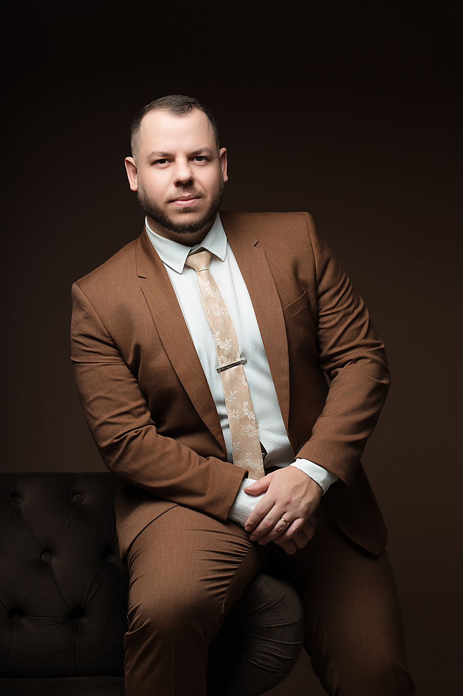

Diagnóstico trabalhista
Levantamento dos pontos de risco da empresa: contratos, jornada, folha, documentos de RH e histórico de reclamações.
Consultoria trabalhista para empresas · Muriaé e região
A PRUMO revisa contratos, jornadas e rotinas de RH da sua empresa para que os problemas sejam resolvidos antes de virarem reclamação na Justiça do Trabalho.
Onde mora o risco
Situações comuns em pequenas e médias empresas que costumam aparecer depois, em forma de processo.
Ponto sem controle, horas extras "por fora" e acordo de compensação mal feito.
Justa causa sem prova, advertências sem registro e verbas rescisórias calculadas errado.
Funcionário sem registro, "PJ" que é empregado e período de experiência mal formalizado.
Depósitos atrasados que viram motivo de rescisão indireta e multa.
Estabilidades ignoradas na hora de desligar alguém.
Cobrança excessiva e conflitos mal conduzidos que geram pedidos de dano moral.
Serviços
Levantamento dos pontos de risco da empresa: contratos, jornada, folha, documentos de RH e histórico de reclamações.
Elaboração e revisão de contratos de trabalho, regulamento interno, acordos de compensação e termos de uso de equipamentos.
Orientação sobre controle de ponto, banco de horas, férias, atestados e afastamentos, em conjunto com a contabilidade da empresa.
Análise prévia de demissões, advertências, suspensões e justa causa, com a documentação adequada a cada caso.
Acompanhamento contínuo para tirar dúvidas do dia a dia antes que virem passivo.
Atuação na Justiça do Trabalho quando o processo já existe, incluindo audiências e acordos.
Como funciona
Você preenche o formulário curto ou chama no WhatsApp.
Entendemos o porte da empresa, o número de funcionários e o que preocupa hoje.
Análise feita pessoalmente pelo advogado responsável, com os documentos da empresa.
Relatório com as prioridades e o acompanhamento que faz sentido para o seu caso.

Quem atende
Advogado com atuação principal em Direito do Trabalho, com casos no TRT da 3ª Região e em outros tribunais. Pós-graduado em Direito Constitucional.
Conhecer de perto como os processos trabalhistas são construídos é o que permite apontar, dentro da empresa, onde eles começam.
Área de atendimento
Dúvidas frequentes
Em empresas pequenas, uma única reclamação trabalhista pesa proporcionalmente mais no caixa. Por isso a revisão de rotinas costuma ser mais relevante justamente nesse porte.
Não. A contabilidade cuida da folha e das obrigações acessórias; a consultoria jurídica trabalha junto com ela, orientando sobre contratos, jornada, desligamentos e riscos legais.
Sim. O atendimento é presencial em Muriaé e cidades próximas, e online para outras localidades.
Sim. Além da defesa no processo, o caso costuma mostrar quais rotinas precisam ser ajustadas para não se repetir.
Depende do porte da empresa e do escopo (diagnóstico pontual, assessoria mensal ou defesa em processo). A proposta de honorários é apresentada após a conversa inicial.
Contato
O formulário abre uma conversa no WhatsApp com as informações preenchidas. O retorno é feito pelo próprio advogado.
WhatsApp: (32) 99856-5055
Atendimento: segunda a sexta, horário comercial